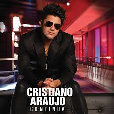

Álbuns

Continua
Lançamento: 2013
- Caso Indefinido
- Ei, Olha o Som
- Maus Bocados

In The Cities
Lançamento: 2014
- É Com Ela Que Eu Estou
- Hoje Eu Tô Terrível
- Sabe Me Prender

Ao Vivo em Goiânia
Lançamento: 2012
- Bará Bará
- Você Mudou
- Mente Pra Mim

Ao Vivo em São Paulo
Lançamento: 2011
- Casei de novo
- Perdeu o cara errado
- Bem melhor assim